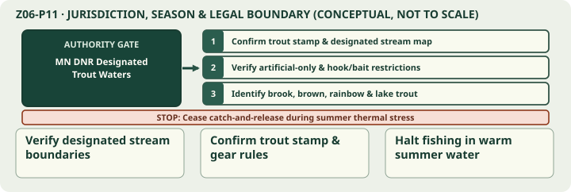

Z06-P11 · Hunting and fishing · New manuscript
Cold-Water Trout, Lake Trout and Designated Stream Rules
Verify trout-stamp requirements, designated trout-stream boundaries, and cold-water conservation rules.
When it applies · Southeastern spring creeks, North Shore tributaries, and deep northern lake-trout lakes.
Equipment · Minnesota trout/salmon stamp, DNR designated trout-stream map, thermometer for stream-temp checks.

Actions
- Confirm whether a stream or lake is a Minnesota DNR Designated Trout Water requiring a valid trout stamp, specific open seasons, and artificial-only or barbless gear rules.[H01]
- Distinguish native brook trout (light worm-like vermiculations on dark back, white-edged lower fins) from brown and rainbow trout, obeying strict North Shore steelhead and brook-trout regulations.[H01, H06]
- Keep hands wet when unhooking trout and stop catch-and-release fishing when stream temperatures climb into thermal-stress levels during hot summer afternoons.[H06]
Failure recognition · Using prohibited live bait on an artificial-only trout stream or handling trout with dry hands strips protective slime and causes delayed mortality.[H01, H06]
Verify · Trout stamp, stream-specific gear rules, species identity, and cool water conditions are verified before fishing.[H01, H06]
Stop or change course · Stop fishing designated trout waters if gear restrictions are unclear or summer water temperatures stress cold-water fish.[H01, H06]
Evidence and editorial notes
- H01 · Minnesota DNR · Minnesota Fishing Regulations (Current web edition)
- Section: Licensing, seasons, limits, and waterbody-specific rules · Conditions: Minnesota angling across inland, border, and designated waters
Support: Anglers must hold a valid license unless explicitly exempt and verify current season dates, possession limits, size slots, and special waterbody rules before fishing.
Limitations: Regulations change annually and differ on border waters, trout streams, and tribal/ceded territories; no emergency creates an automatic legal exemption. · Conflicting evidence: None noted.
Editorial note: Establishes Z06 fishing authority gate. · Specialist reviewer: Minnesota DNR fisheries and legal reviewer
Primary source · checked 2026-11-25 - H06 · Minnesota DNR · Fishes of Minnesota Species Reference (Current web edition)
- Section: Positive fish species identification before keeping catch · Conditions: Identifying regional game, rough, and protected fish species
Support: Accurate species identification using fin counts, mouth structure, markings, and body profile is mandatory to comply with limits and protected-species rules.
Limitations: Juveniles and hybrids can resemble restricted species; release immediately when positive identification is uncertain. · Conflicting evidence: None noted.
Editorial note: Connects Z06 identification to lawful harvest. · Specialist reviewer: Fisheries biologist
Primary source · checked 2026-11-25
Source lineage · New manuscript (Z06 P17 regulations and ecology) · Classification · New manuscript.